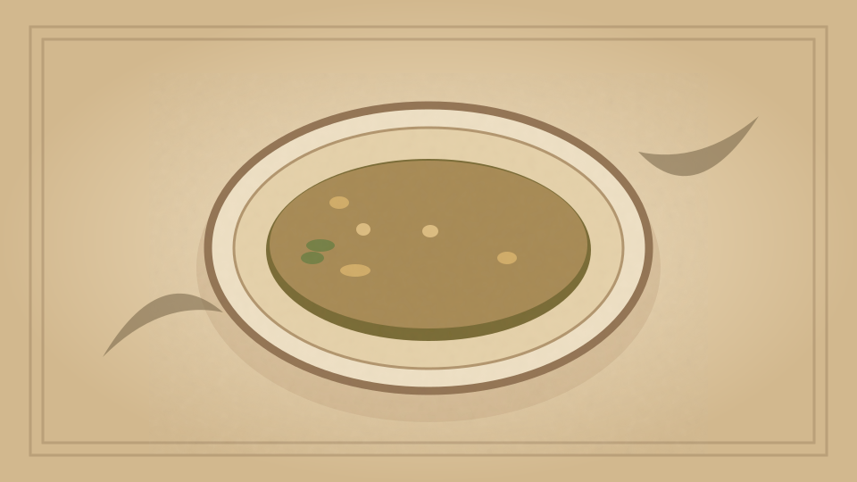

1910 · Fannie Merritt Farmer · SOUPS
Oyster Soup, Amsterdam Style
The Boston Cooking-School Cook Book
❧ ───── ❦ ───── ❧

Historical Recipe
The following text is extracted from the 1910 edition, retaining historical terminology and quantities.
Original Ingredients & Directions
1 quart oysters
Water
3 tablespoons butter
3½ tablespoons flour
½ teaspoon salt
Paprika
Celery salt
1 cup cream
Clean, pick over, chop, and parboil oysters; drain and add to liquor enough water to make one quart liquid. Brown butter, add flour, and pour on gradually, while stirring 131 constantly, oyster liquor. Let simmer one-half hour. Season with salt, paprika, and celery salt, and just before serving add cream.
Automatically extracted transcription; editorial verification pending. Historical instructions may not meet modern food-safety standards.